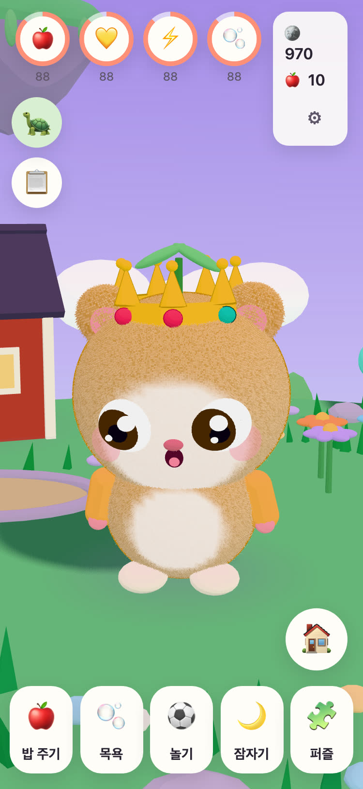
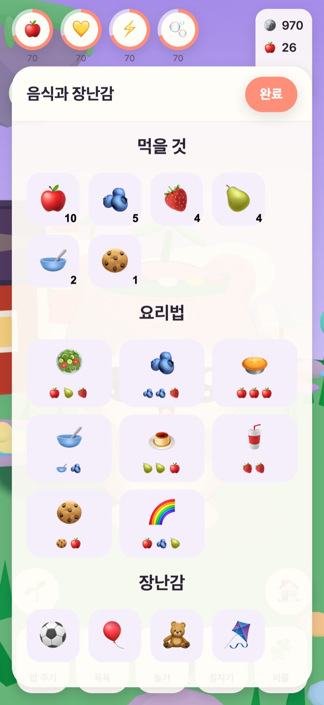
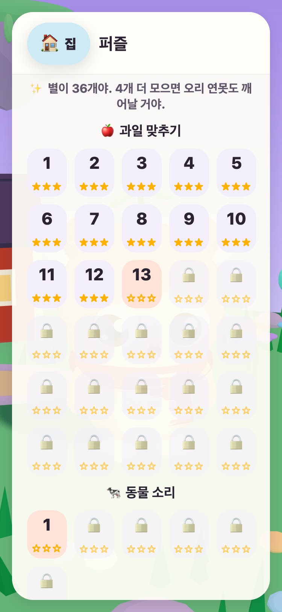
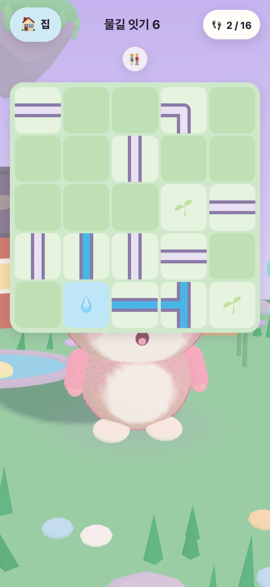
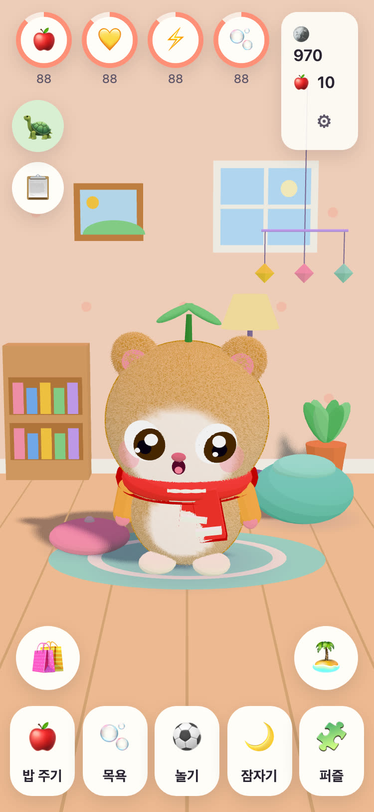
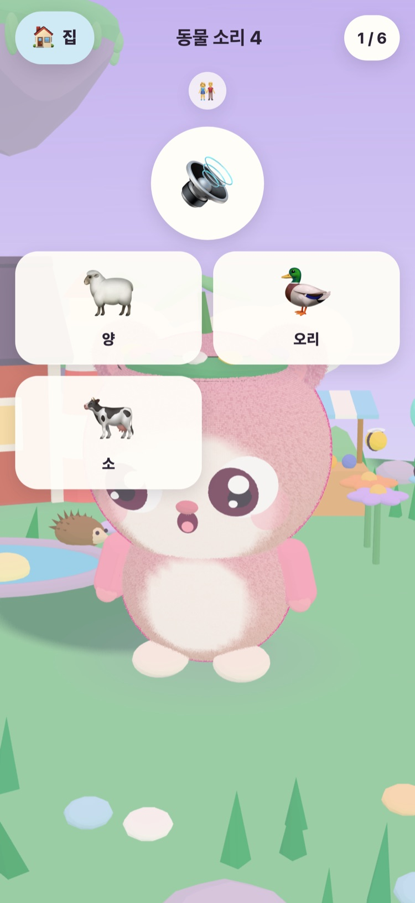

JUNOLittle Worlds
Juno를 부화시켜 돌보고, 하늘에 떠 있는 섬을 깨우는 다정한 퍼즐을 풀어요. 6~10세 어린이를 위한 차분한 게임으로, iPhone과 iPad에서 즐길 수 있어요.
안녕! 따뜻한 알을 세 개 찾았어. 어떤 게 네 거야?
- 광고 없음
- 추적 없음
- 계정 없음
- 타이머도 재촉도 없음






아이만의 작은 친구
풀밭 섬을 돌보는 나이 많은 거북이 할아버지 Tintin이 따뜻한 알 세 개를 찾았어요. 아이가 하나를 골라, 태어난 아기에게 이름을 지어 줘요. 그때부터 Juno는 아이가 밥을 주고, 씻기고, 함께 놀고, 낮잠을 재우는 아이만의 친구예요.
-
알 고르기
따뜻한 알 세 개, 세 가지 색. 아이가 하나를 골라 알에서 아기가 나오는 모습을 지켜봐요.
-
이름 짓고, 아껴 주기
밥 주기, 씻기기, 놀기, 낮잠. Juno는 자기 기분을 보여 주고, 우정이 깊어질수록 자라요.
-
섬 깨우기
퍼즐에서 별을 얻을 때마다 풀밭 섬에 빛이 돌아와요. 꽃과 벌, 오리들이 다시 돌아올 때까지요.
밥 주기, 씻기기, 놀기, 낮잠
여러 가지 음식과 장난감, 목욕할 때의 비눗방울, 그리고 기분을 보여 주는 Juno. 상태는 천천히 줄어들지만 절대 0이 되지 않아서, Juno를 잃는 일은 없어요.
다정한 퍼즐 57개
과일 맞추기, 기억 정원, 그리고 실제 녹음으로 만든 동물 소리와 탈것 소리. 별은 시간이 아니라 움직인 횟수로 정해지고, 다시 도전하는 것은 언제나 무료예요.
깨어나는 섬
꽃밭이 열리며 벌이 찾아오고, 오리 연못에 물과 오리가 돌아오고, 텃밭의 씨앗은 사과와 딸기로 자라요.
아늑하게 꾸미는 방
퍼즐과 매일의 미션으로 받은 코인으로 Juno의 방을 꾸밀 장식과 입을 옷을 살 수 있어요. 코인 가게에는 실제 돈이 드는 것이 하나도 없어요.
소리 내어 읽기
아직 글을 읽지 못하는 아이를 위해 할아버지 Tintin이 모든 대사를 따뜻한 자신의 목소리로 읽어 줘요. 할아버지 Tintin을 누르면 다시 들을 수 있어요.
보호자 메뉴
보호자 확인을 거친 뒤 언어, 소리 내어 읽기, 소리, 잠자는 시간, 부드러운 쉬는 시간 알림을 정할 수 있어요. 잠자는 시간이 되면 Juno는 잠들고, 퍼즐은 아침까지 기다려요.
21개 언어로 말해요
할아버지 Tintin은 아이에게 아이의 언어로 말을 걸어요. 보호자 메뉴에서 언어를 고르거나, 기기 설정을 따르게 할 수 있어요.
English Svenska Dansk Norsk Suomi Deutsch Nederlands Français Español Italiano Português (Brasil) Polski Русский Ελληνικά Türkçe Bahasa Melayu Kiswahili हिन्दी 日本語 한국어 简体中文
한 할아버지가 만든 게임
JUNO는 스웨덴의 한 할아버지가 손녀를 위해 만들었어요. 손녀가 하는 모습을 기쁜 마음으로 지켜볼 수 있는 게임이에요. 게임 속 거북이 할아버지 Tintin이 바로 그 할아버지예요.
그래서 규칙은 간단해요. 재촉하는 것도, 속이는 것도, 아이에 대해 무엇이든 수집하는 것도 없어요.
무료, 광고 없음
JUNO는 무료로 내려받을 수 있고, 광고도 추적도 계정도 없어요. 아이가 하는 모든 것은 기기 안에만 남아요. 개인정보 보호 페이지를 확인해 보세요.
JUNO Plus나 겨울 팩은 보호자 메뉴에서 보호자 확인을 거쳐 어른이 구입할 수 있어요. 둘 다 한 번만 구입하면 되고, 복원할 수 있으며 가족과 공유할 수 있어요.